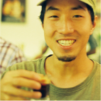
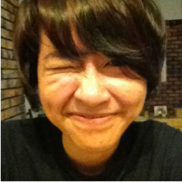

About CafeHop KL
CafeHop KL is a mapping project mapping independent cafes around Kuala Lumpur. We have made this site and also printed copies to distribute among 28 cafes that have supported this project.
Cafes are chosen based on a combination of good coffee, good food, good service and/or good vibes in general. So, what are you waiting for? Start cafe hopping, pop by these novel cafes and find one that suits you. We hope you find a nice place and have a great coffee.
How we got here
This started as a passion project to help connect cafes and coffee lovers in Malaysia. Originally, funding was sought via crowd-funding under Indiegogo but failed spectacularly.
However, Barista Guild Asia approached us to work with us in approaching independent cafes around KL and coffee organisation like Coffex, Dankoff, Auresso and Cuppa to help fund the costs of designing, printing and promoting this project.
In the end, a total of 28 cafes out of the full list helped fund this map and are listed on the physical map which are now distributed in these cafes. Again, all cafes are vetted for good service, good coffee and good ambience and we hope you find a cafe that suits you.
We would like to thank these cafes and organisations for supporting, funding and believing in this project while respecting our creative independence in this project.
The digital map will be updated in the beginning of each month for new cafes that are up to our standards. We hope for better cafes and more vibrant cafe culture in Malaysia.
The CafeHop KL Team
-
 Joachim Leong Joachim was a lawyer in a different life but was born again in a shower of coffee (non-scalding, of course). Now, a coffee lover, after visiting over 70 cafes around Malaysia, he thought why not a map of cafes in Malaysia? If Joachim was a coffee drink, he would be Cham (mixed) tea and coffee with milk because sometimes he doesn't know what he is - Am I a tea that is mixed with coffee or a coffee mixed with tea? Or maybe a milk posing as a coffee mixed with tea. Perplexing.
-
 Jamie Lim Meet fun-sporty Jamie. How she came to be involved with the CafeHop KL project actually began from what was first planned to be simple affair of helping visually put together the idea and concept for a self-made project. Now, she works on the creative for CafeHop KL. By profession she freelances in design and illustration. If she isn't behind the computer, you can find her throwing a frisbee around KL. If Jamie was a coffee, she would be a latte - she ain't latte-ing you down *wink*
-
Sher Minn Chong Sher Minn, our website designer on the other side of the Atlantic but soon to return to Malaysia to conquer one webpage at a time! If Sher Minn was a coffee , she would be a double espresso; a good representation of the amount of caffeine she consumes daily.
-
Shean Tan Shean is our film-loving, film-camera trotting photographer taking awesome hipster shots of cafes, latte art and coffee all around KL town. If Shean was a coffee, she would be an ice drip coffee because sheʼs deliberate, patient and well-measured.